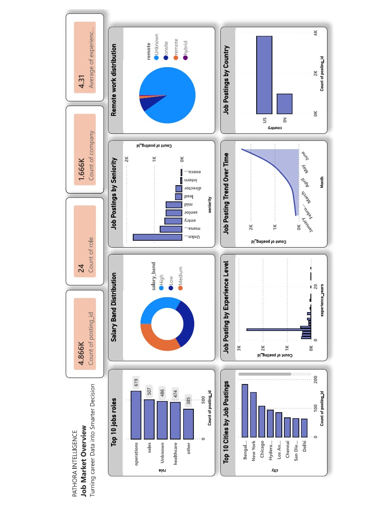
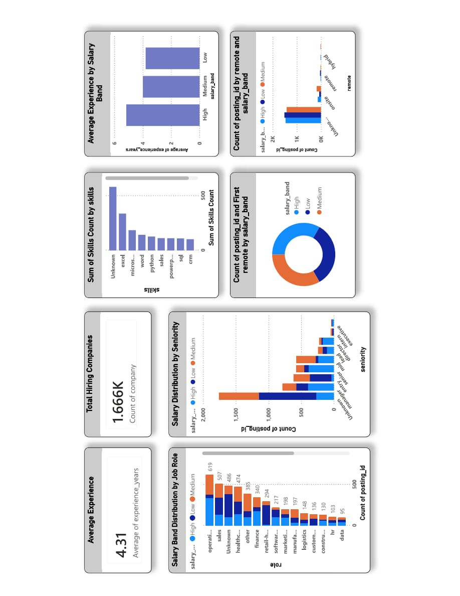
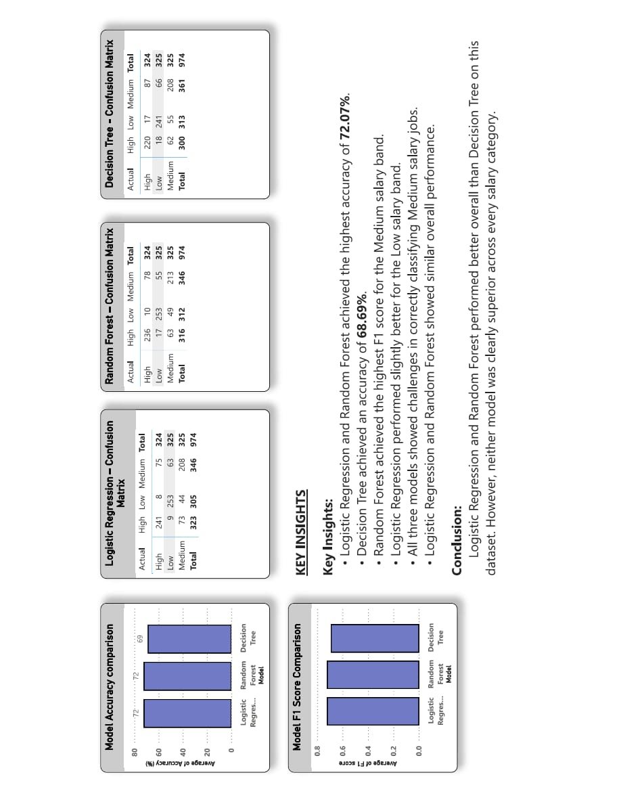

Turning Career Data into Smarter Decisions.
Pathora Intelligence is a data analytics and machine learning project focused on job market analysis, salary classification and career insights.
The project uses a balanced job postings dataset containing information about job roles, companies, locations, experience, skills and salary categories.
SQL was used to create and manage the Pathora Intelligence database and perform job market analysis.
Python was used for data exploration, visualization and salary classification using machine learning.
Power BI was used to create interactive dashboards to understand job market trends, salary distribution and skill demand.



Comparison of Logistic Regression, Decision Tree and Random Forest models.
| Model | Accuracy | Macro F1 Score |
|---|---|---|
| Logistic Regression | 72.07% | 0.72 |
| Decision Tree | 68.69% | 0.69 |
| Random Forest | 72.07% | 0.72 |
Key Insight: Logistic Regression and Random Forest achieved the highest accuracy of 72.07%.
Three machine learning classification algorithms were evaluated to classify job salary bands.
Logistic Regression and Random Forest achieved the highest accuracy. Random Forest performed slightly better for the Medium salary category, while Logistic Regression performed better for the Low salary category.